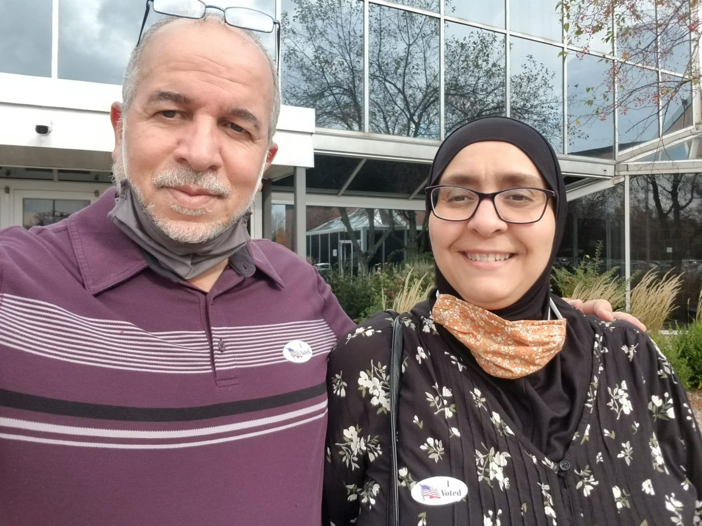
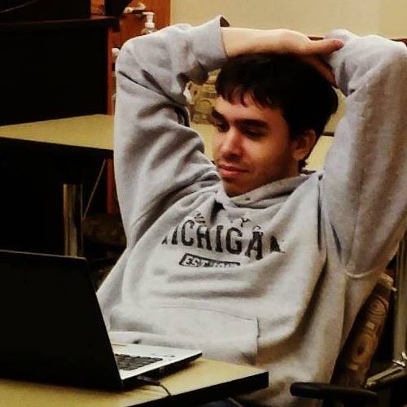
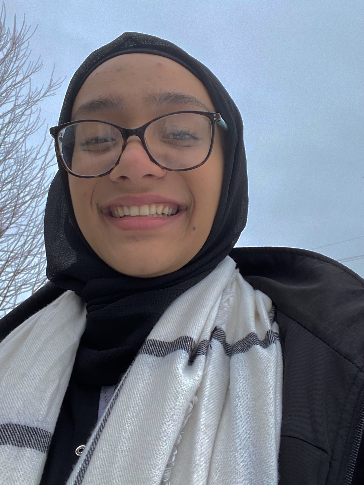
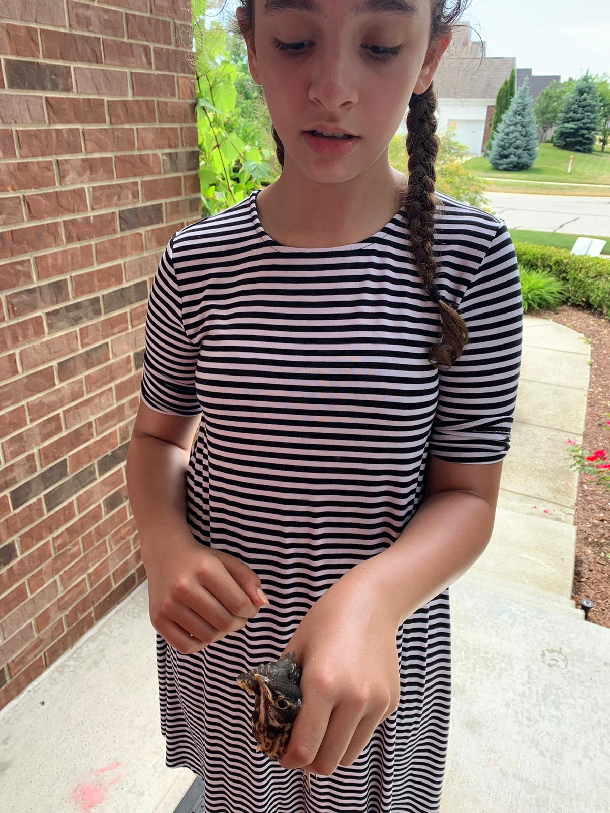

My parents were both born and raised in a small town in west Algeria called Tiaret. It is about 270 kilometers from the capital Algers or about 4 hours drive. They lived fairly close to one another and familes knew eachother generally. They were married in September 1990. My father, Mohammed Boudalia, is a Professor in the field of Computer Science and my mother, Fatiha Boudalia, is a healthcare administrator. Their journey has been one that not many can relate to but have truly gotten where they are today off their own hardwork and dedication.
My oldest brother (who is about seven years older than I am) is Amine Boudalia who is currently a Software Engineer within Ann Arbor. He too was also born in Algeria however most of his life was spent here inthe US. He has always had the strongets interests in computers. Any memory I try to recall of him during our childhood was him by a computer, playing on a computer, or talking about a computer. His strong interest then lead him to what it was he wanted to study and pursue longterm and barely ever doubted his interests in it. He pursued his bachelors in Computer Science and then pursued a masters degree in Information. He loves to play video games (Super Smash Bros in particular) and summer are usuallyspent biking around and finding new trails nearby.
My sister Sabah is one of my two younger sisters that is five years younger than me. She was born in Pittsburgh, Pennsylvania just like me but did not spend much time there since we moved to Michigan shortly after she was born. She is currently a freshman in college and currently leaning towards the teaching profession. My sister has a certain aura that kids gravitate towards that make her such an excellent teacher for young students from her previous experiences. She was able to be a classroom assist and a classroom lead during a few community summer camps and was a private tutor in Arabic. On top of all this, her sense of style was sublime and continues to ensure that her outfits match and has a strong eye for interior design.
My youngest sister Reem is the youngest in the family with a gap of ten years between her and I (16 years between her and my eldest brother for reference). She is a middle school student and also values her education as it was instilled in her like the rest of us. Her hobbies include lots of shopping, watching movies, and summertime activities such as tennis, biking, and walking outside.
